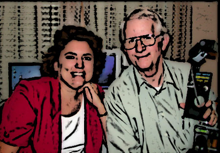

Owners and Management

We were the first virtual imaging company in Lincoln. With years of digital photography, computer technology, real estate, and internet marketing experience we give you top quality at the best price.
Leona and Dennis Barratt
Award winning photography or rural Nebraska at its finest
http://nebraskaphotos.myportfolio.com/